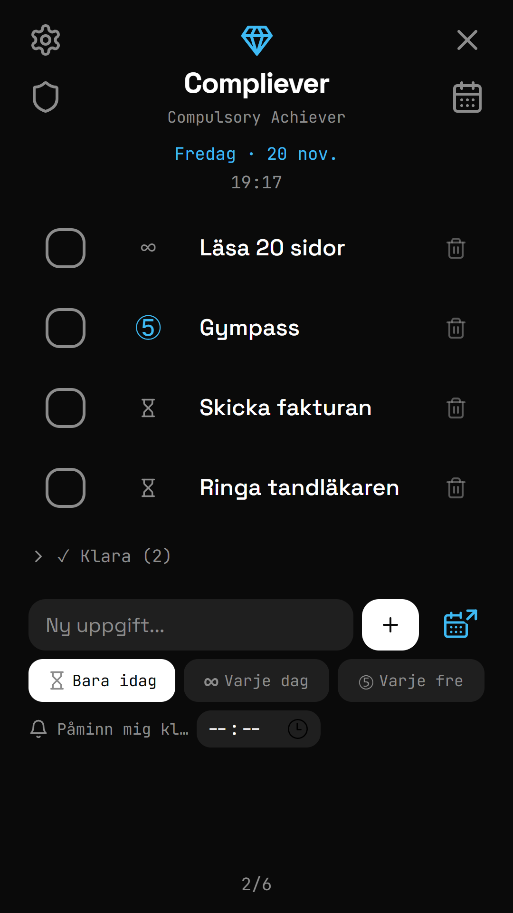
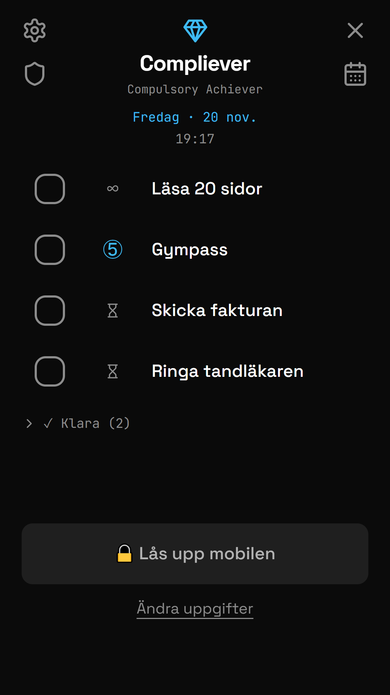
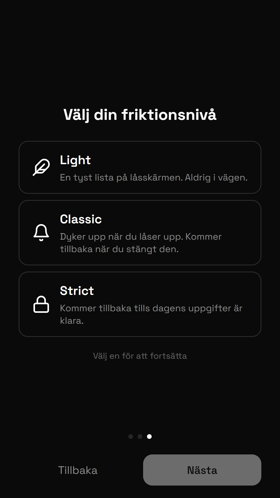
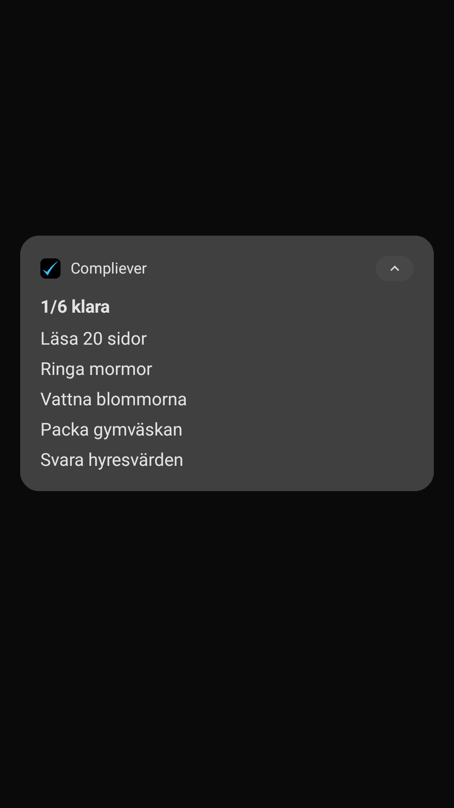
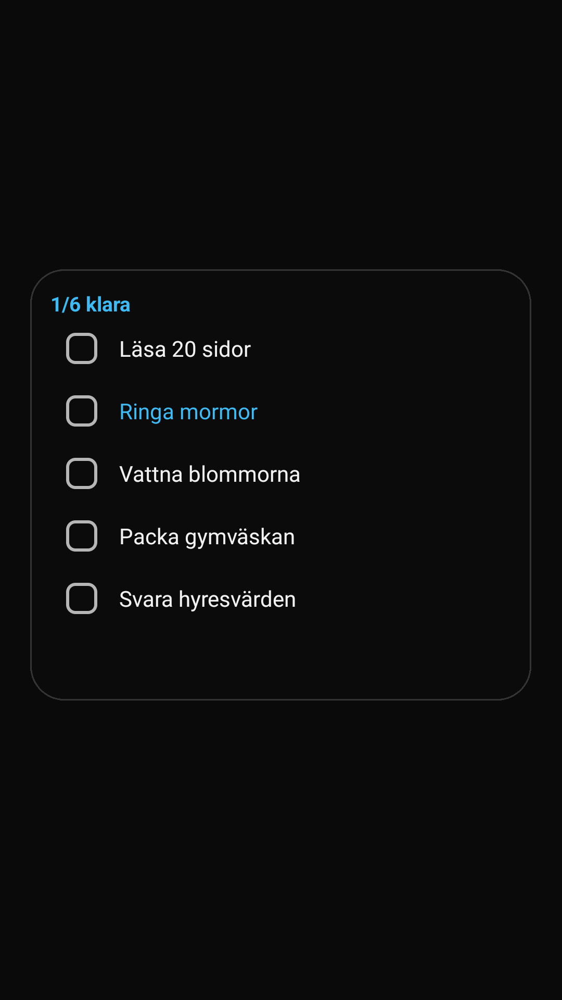

Förhalning börjar med en upplåsning. Compliever (Compulsory Achiever) visar dagens uppgifter först, så att du gör dem innan du börjar scrolla. För Android.
Listan finns i en avisering och en widget på hemskärmen. Inget fönster över dina appar, fingeravtrycket fungerar som vanligt.
Listan öppnas i helskärm när du låser upp, och på låsskärmen. Stänger du den kommer den tillbaka efter en tid du väljer.
Som Classic, men den kommer tillbaka efter 1 minut, tills dagens uppgifter är klara.





Kolla först nivån: Light öppnar aldrig något fönster – listan finns i aviseringen och widgeten. I Classic och Strict, öppna Inställningar → Behörigheter & tillförlitlighet: alla rader ska vara gröna. ”Fixa” öppnar rätt skärm, ”Testa nu” kontrollerar att fönstret öppnas av sig självt.
Många telefoner stoppar appar i bakgrunden för att spara batteri. Inställningar för de vanligaste märkena (namnen kan skilja sig lite mellan versioner):
Guiden i appen visar stegen för din telefon.
Light: bara avisering och widget, inget täcker skärmen. Classic: listan i helskärm efter upplåsning och på låsskärmen; stänger du den kommer den tillbaka efter den tid du valt. Strict: som Classic, men den kommer tillbaka efter 1 minut tills dagens uppgifter är klara. Du kan byta nivå när som helst i Inställningar → Visning.
Guiden och Inställningar → Visning kan be telefonen lägga till widgeten. Vissa telefoner (till exempel Realme) säger att den lades till men placerar den ingenstans. Om widgeten inte finns på hemskärmen, lägg till den för hand:
Tips: håll fingret på widgeten för att göra den större.
Nej. Alarm, timer och samtal går alltid först. Listan flyttar sig och kommer tillbaka när de är över.
På vissa telefoner stänger ett fönster över låsskärmen av fingeravtrycksläsaren. Lås upp med knappen på listan, eller välj Light, som aldrig öppnar något fönster.
Från version 1.0.11: om Androids säkerhetskopia av telefonen är på kommer dina uppgifter och inställningar tillbaka av sig själva när du installerar Compliever på den nya telefonen. Du kan också använda Inställningar → Data → Säkerhetskopia → ”Exportera till fil” och importera filen på den nya telefonen. Behörigheterna ställs in på nytt på den nya telefonen.
Compliever är gratis, utan gräns för antal uppgifter och utan konto. Valfria Premium och Founder kommer snart.
Allt stannar i telefonen. Appen har ingen server och skickar ingenting. Detaljer: integritetspolicy.